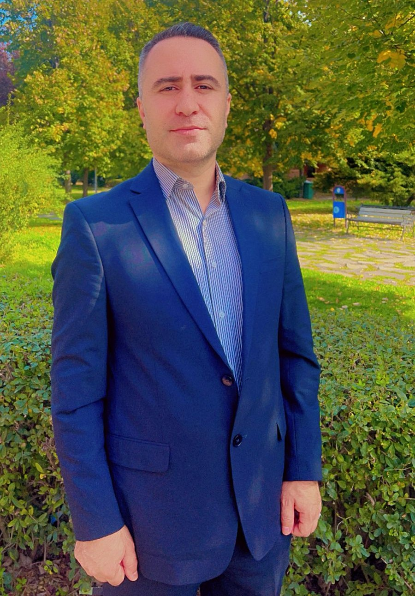

M.Sc. in Computer Engineering working at the intersection of computational pathology, foundation models, and language technology for underserved communities. I build AI systems for cancer diagnostics on whole-slide images, and free AI-education tools for Badini Kurdish speakers. Currently pursuing a funded PhD in computational pathology.
I am a computer engineer and researcher based in Duhok, Kurdistan Region of Iraq, holding an M.Sc. in Computer Engineering from Tokat Gaziosmanpaşa University, Turkey. My research centers on computational pathology — building and evaluating diagnostic AI systems on whole-slide histopathology images using foundation-model embeddings from models such as CONCH, TITAN, UNI2-h, H-optimus-1, and GigaPath. My current work focuses on aggregation, calibration, and uncertainty quantification on top of these embeddings, with the goal of making foundation-model-based diagnostics more reliable and clinically trustworthy.
Alongside pathology AI, I build language technology for underserved communities. I am the developer of JEER, a free AI education platform for Badini Kurdish speakers, and Duhok Health Network, a multilingual healthcare coordination platform for my home region. I work fluidly across English, Arabic, and Badini Kurdish, and I am deeply committed to building AI tools that serve linguistic and cultural communities that mainstream AI development typically overlooks.
I am currently pursuing a funded PhD position in computational pathology in Europe, and I welcome opportunities for academic collaboration, supervision, and research exchange with groups working on foundation models, uncertainty quantification, or AI for low-resource languages.